| id | True_LS | Q1 | Q2 | Q3 |
|---|---|---|---|---|
| P001 | 44.5 | 40 | 50 | 20 |
| P002 | 36.9 | 30 | 40 | 70 |
| P003 | 43.3 | 77 | 72 | 56 |
| P004 | 39.7 | 65 | 60 | 90 |
| P005 | 30.6 | 57 | 56 | 39 |
| P006 | 44.7 | 41 | 41 | 26 |
Data Analysis for Psychology in R 3
Psychology, PPLS
University of Edinburgh
|
Linear Mixed Models (with Elizabeth Pankratz) |
Regression refresher, intro to group-structured data |
| Modelling group-structured data using random effects | |
| Interpreting LMMs and building maximal models | |
| Troubleshooting model fit, checking assumptions + diagnostics | |
| LMMs: Practice analysis | |
|
Factor Analysis working with multi-item measures (with Josiah King) |
measurement and dimensionality |
| exploring underlying constructs (EFA) | |
| testing theoretical models (CFA) | |
| reliability and validity | |
| recap & exam prep |
Labs:
Lecture consolidation:
theorized common cause of responses to a set of variables
something that explains correlations between measured variables
assumed to be real (unobservable) things in the world
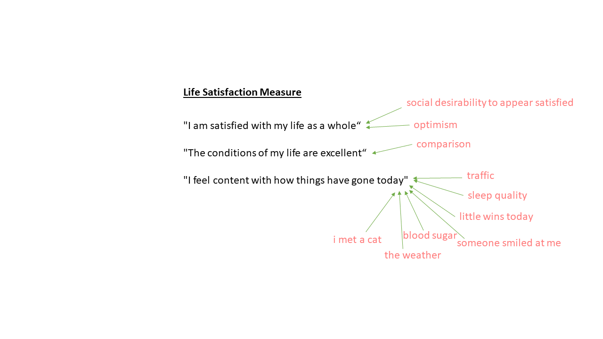
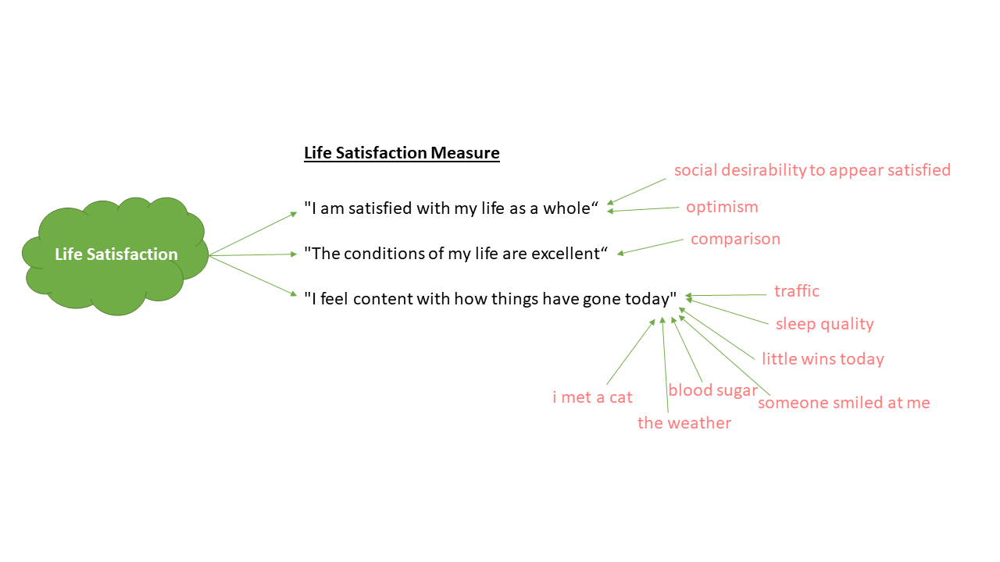
\[ \begin{equation} \text{Var}(\text{total}) = \text{Var}(\text{common}) + \underbrace{\text{Var}(\text{specific}) + \text{Var}(\text{error})}_{\text{unique variance}} \end{equation} \]
| common variance | (co)variance shared across items | true and shared |
| specific variance | variance specific to an item that is not shared with any other items | true and unique |
| error variance | variance due to measurement error | not ‘true’, unique |
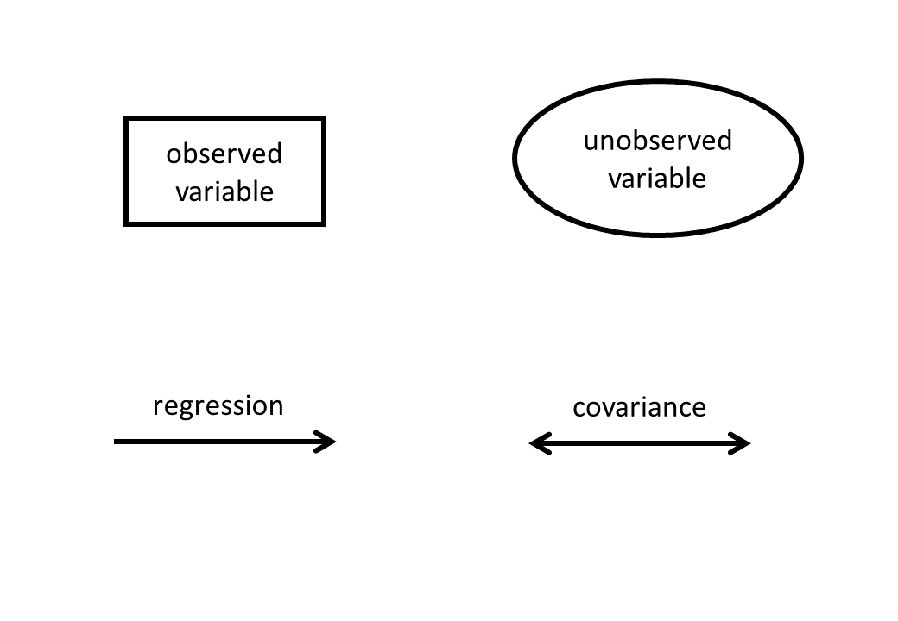
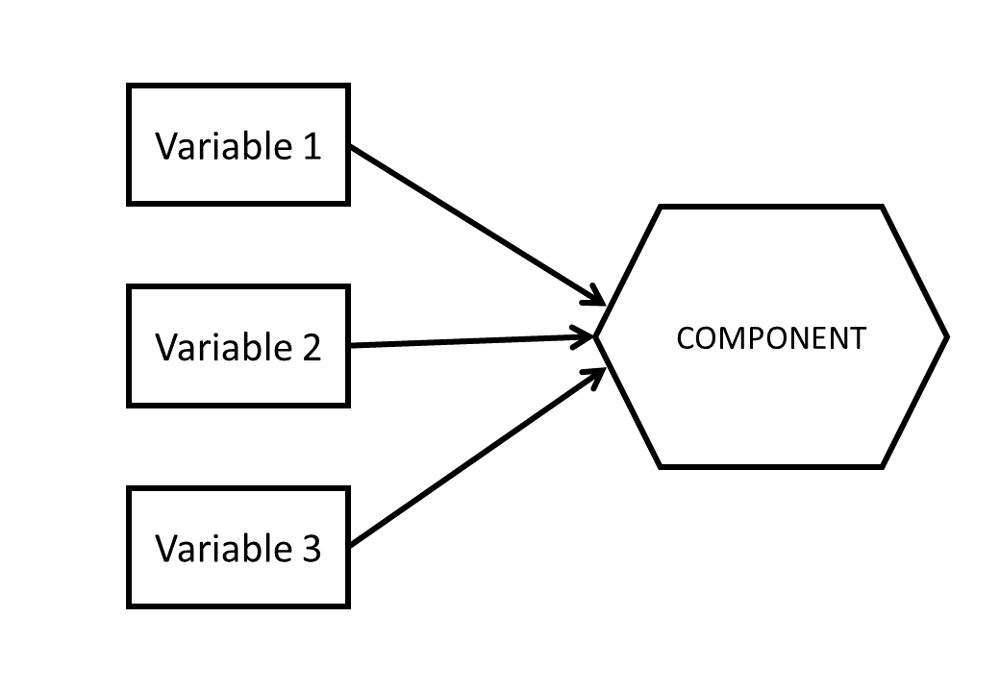
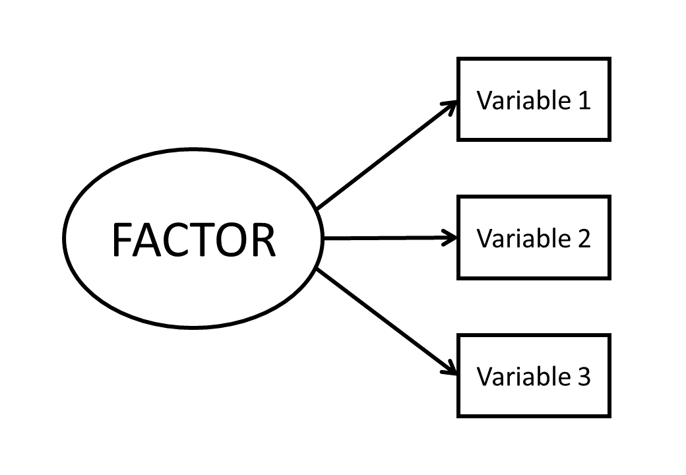
Last week was mainly about % variance accounted for by each principal component
We didn’t look at the loadings much..
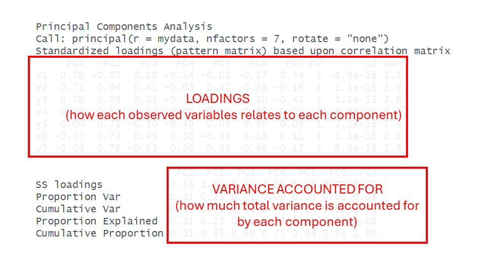
In EFA we still get “loadings” and “variance accounted for”
The patterns of loadings will help us understand what the latent factors actually are.
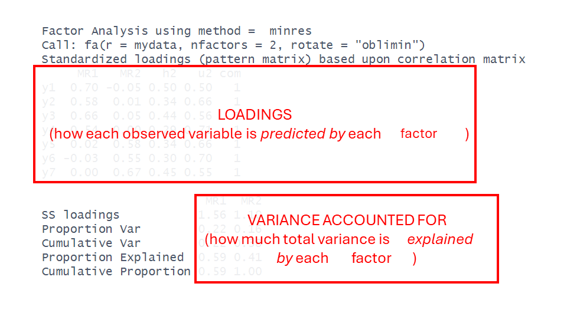
We have some observed variables that are correlated
Latent factor(s) are unobservable variables that explain the patterns of correlations.
Idea is that the correlations between items after removing the effect of the Factor are zero
| id | True_LS | Q1 | Q2 | Q3 |
|---|---|---|---|---|
| P001 | 44.5 | 40 | 50 | 20 |
| P002 | 36.9 | 30 | 40 | 70 |
| P003 | 43.3 | 77 | 72 | 56 |
| P004 | 39.7 | 65 | 60 | 90 |
| P005 | 30.6 | 57 | 56 | 39 |
| P006 | 44.7 | 41 | 41 | 26 |
\[ \begin{align} \rho(Q_{1},Q_{2}\, |\, \color{grey}{\textrm{True_LS}})=0 \\ \rho(Q_{1},Q_{3}\, |\, \color{grey}{\textrm{True_LS}})=0 \\ \rho(Q_{2},Q_{3}\, |\, \color{grey}{\textrm{True_LS}})=0 \\ \end{align} \]
\(\begin{align}\text{Outcome} \quad\quad\quad\quad\quad &=& \quad\quad\text{Model} \quad\quad\quad\quad\quad&+&\quad\quad\text{Error} \\\end{align}\)
\(\begin{align}\text{Correlation matrix} \quad &=& \quad \begin{aligned}[c] &\text{How each variable} \\ &\text{reflects the shared} \\ &\text{factor(s)} \end{aligned} \quad&+&\quad \begin{aligned}[c] &\text{How each variable} \\ &\text{uniquely varies} \end{aligned} \\ \end{align}\)
\(\begin{align} \text{Correlation matrix} \quad &=& \quad\text{Factor loadings} \quad\quad\quad&+&\quad \text{Unique variances} \\ \end{align}\)
\[ \begin{align} \text{Outcome} &= \quad\quad\quad\text{Model} &&+ \text{Error} \quad\quad\quad\quad\quad \\ \quad \\ \text{Correlation Matrix} &= \quad\quad\quad\begin{aligned}[c] &\text{How each variable} \\ &\text{reflects the shared} \\ &\text{factor(s)} \end{aligned} &&+ \begin{aligned}[c] &\text{How each variable} \\ &\text{is unique} \end{aligned} \\ \quad \\ \text{Correlation matrix} &= \quad\quad\quad\text{Factor loadings} &&+ \text{Unique variances} \quad\quad\quad\quad\quad \\ \quad \\ \quad \\ \mathbf{\Sigma} &= \quad\quad\quad\mathbf{\Lambda}\mathbf{\Lambda'} &&+ \mathbf{\Psi} \quad\quad\quad\quad\quad\quad \\ \quad \\ \begin{bmatrix} 1 & 0.53 & 0.57 & 0.57 \\ 0.53 & 1 & 0.54 & 0.56 \\ 0.57 & 0.54 & 1 & 0.56 \\ 0.57 & 0.56 & 0.56 & 1 \\ \end{bmatrix} &= \begin{bmatrix} 0.747 \\ 0.725 \\ 0.746 \\ 0.764 \\ \end{bmatrix} \begin{bmatrix} 0.747 & 0.725 & 0.746 & 0.764 \\ \end{bmatrix} &&+ \begin{bmatrix} 0.44 & 0 & 0 & 0 \\ 0 & 0.47 & 0 & 0 \\ 0 & 0 & 0.44 & 0 \\ 0 & 0 & 0 & 0.42 \\ \end{bmatrix} \\ \quad \\ \begin{bmatrix} 1 & 0.53 & 0.57 & 0.57 \\ 0.53 & 1 & 0.54 & 0.56 \\ 0.57 & 0.54 & 1 & 0.56 \\ 0.57 & 0.56 & 0.56 & 1 \\ \end{bmatrix} &= \begin{bmatrix} 0.56 & 0.54 & 0.56 & 0.57 \\ 0.54 & 0.53 & 0.54 & 0.55 \\ 0.56 & 0.54 & 0.56 & 0.57 \\ 0.57 & 0.55 & 0.57 & 0.58 \\ \end{bmatrix} &&+ \begin{bmatrix} 0.44 & 0 & 0 & 0 \\ 0 & 0.47 & 0 & 0 \\ 0 & 0 & 0.44 & 0 \\ 0 & 0 & 0 & 0.42 \\ \end{bmatrix} \\ \end{align} \]
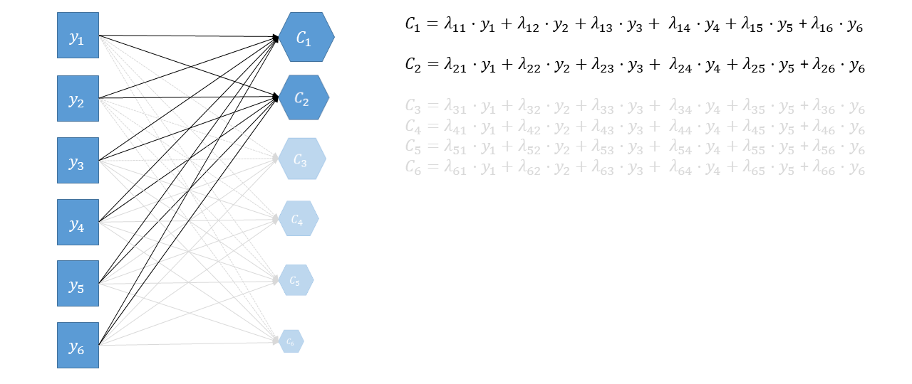
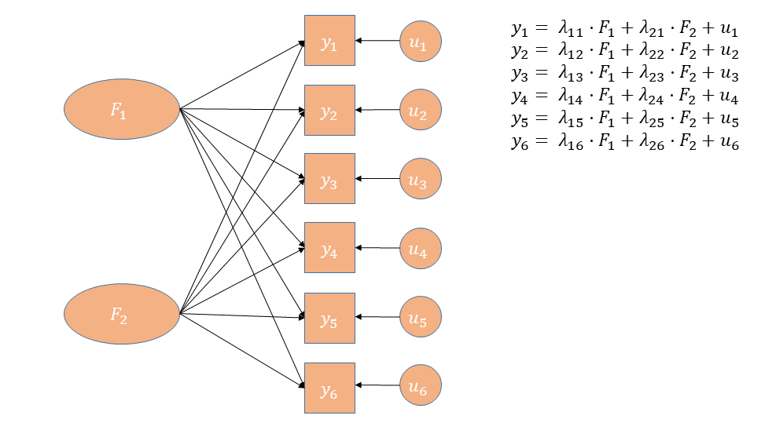
We give meaning to the new dimensions.
Latent factors do not need to be “orthogonal” (uncorrelated)
We learn something.
A little warning..
in psychology, people sometimes use PCA and EFA interchangeably!
they use PCA but let components correlate, they interpret loadings and give meaning to their components.
it’s a rabbit hole that we will not go down..
Goal: Reduce, but also learn about/model their underlying (latent) causes
fa()
can take a covariance matrix, a correlation matrix, or the raw data.
nfactors = ?
tells it to estimate a ??? factor model
rotate = ??
tells it whether or not we think those factors could be correlated (more on this shortly)
fm = ???
tells it how to estimate the model
cor = ????
tells it what sort of correlations to use
Factor Analysis using method = ml
Call: fa(r = lsat10[, 2:11], nfactors = 4, rotate = "none", fm = "ml",
cor = "cor")
Standardized loadings (pattern matrix) based upon correlation matrix
ML1 ML2 ML3 ML4 h2 u2 com
Q1 0.53 0.75 0.06 0.05 0.85 0.152 1.8
Q2 0.55 0.70 -0.10 -0.13 0.81 0.187 2.0
Q3 0.96 -0.20 -0.04 0.01 0.96 0.043 1.1
Q4 0.61 0.15 0.11 0.34 0.52 0.483 1.8
Q5 0.87 -0.05 -0.10 -0.09 0.78 0.221 1.1
Q6 0.73 -0.21 0.31 -0.10 0.69 0.310 1.6
Q7 0.19 0.38 -0.23 0.29 0.32 0.681 3.1
Q8 0.53 -0.24 0.25 0.19 0.44 0.563 2.2
Q9 0.25 0.32 -0.09 0.21 0.22 0.779 2.9
Q10 0.38 0.48 0.33 -0.09 0.50 0.505 2.8
ML1 ML2 ML3 ML4
SS loadings 3.69 1.69 0.37 0.32
Proportion Var 0.37 0.17 0.04 0.03
Cumulative Var 0.37 0.54 0.58 0.61
Proportion Explained 0.61 0.28 0.06 0.05
Cumulative Proportion 0.61 0.89 0.95 1.00
Mean item complexity = 2
Test of the hypothesis that 4 factors are sufficient.
df null model = 45 with the objective function = 5.22 with Chi Square = 495
df of the model are 11 and the objective function was 0.09
The root mean square of the residuals (RMSR) is 0.02
The df corrected root mean square of the residuals is 0.05
The harmonic n.obs is 100 with the empirical chi square 2.31 with prob < 1
The total n.obs was 100 with Likelihood Chi Square = 8.27 with prob < 0.69
Tucker Lewis Index of factoring reliability = 1.03
RMSEA index = 0 and the 90 % confidence intervals are 0 0.083
BIC = -42.4
Fit based upon off diagonal values = 1
Measures of factor score adequacy
ML1 ML2 ML3 ML4
Correlation of (regression) scores with factors 0.98 0.94 0.69 0.63
Multiple R square of scores with factors 0.97 0.89 0.48 0.40
Minimum correlation of possible factor scores 0.94 0.79 -0.04 -0.20# A tibble: 6 × 11
id Q1 Q2 Q3 Q4 Q5 Q6 Q7 Q8 Q9 Q10
<chr> <dbl> <dbl> <dbl> <dbl> <dbl> <dbl> <dbl> <dbl> <dbl> <dbl>
1 P001 40 50 20 51 15 0 35 1 27 42
2 P002 30 40 70 22 56 62 24 32 2 15
3 P003 77 72 56 71 67 43 63 32 65 75
4 P004 65 60 90 42 64 74 38 34 23 51
5 P005 57 56 39 46 23 33 54 8 35 31
6 P006 41 41 26 26 4 45 12 25 14 67| variable | description |
|---|---|
| id | Participant ID |
| Q1 | Overall, I am satisfied with my life. |
| Q2 | The conditions of my life are excellent. |
| Q3 | I feel content with how things have gone today. |
| Q4 | I am deeply happy with the way my life has turned out. |
| Q5 | I feel a sense of inner peace and satisfaction. |
| Q6 | I wake up most mornings feeling positive about the day ahead. |
| Q7 | I have gotten the important things I want in life. |
| Q8 | I experience joy and pleasure regularly in my daily life. |
| Q9 | My life has turned out better than I expected it would. |
| Q10 | If I could live my life over, I would change almost nothing. |
in short, are items sufficiently correlated with one another?
if variables have <5 response options, Pearson’s correlation is not idea. use polychoric correlations instead: fa(......, cor = "poly")
briefly:
there are different ways to “extract” (estimate) EFA models.
different methods have different requirements, making them more suitable for specific scenarios
The default (fm = "minres") is a safe choice
Factor rotation is an approach that aims to clarify the relationships between items and factors.
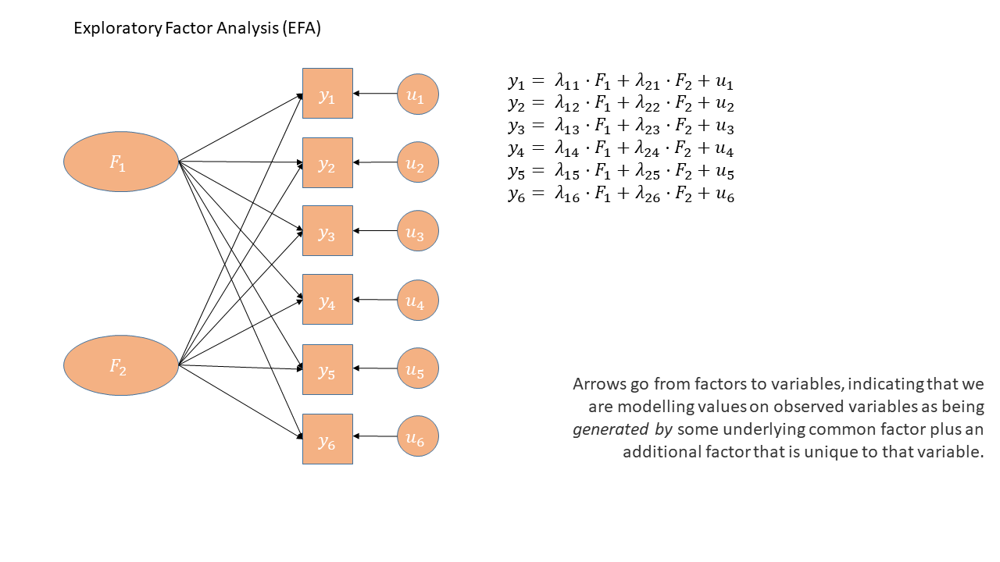
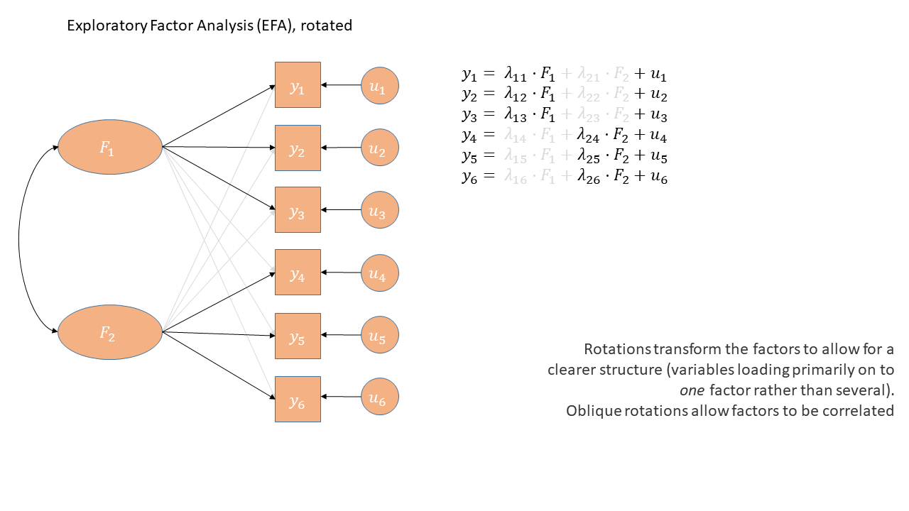
Without rotation, EFA and PCA are very similar
Rotation is essentially a transformation applied to the loadings.
it doesn’t change the model fit. like scaling a predictor in a lm()
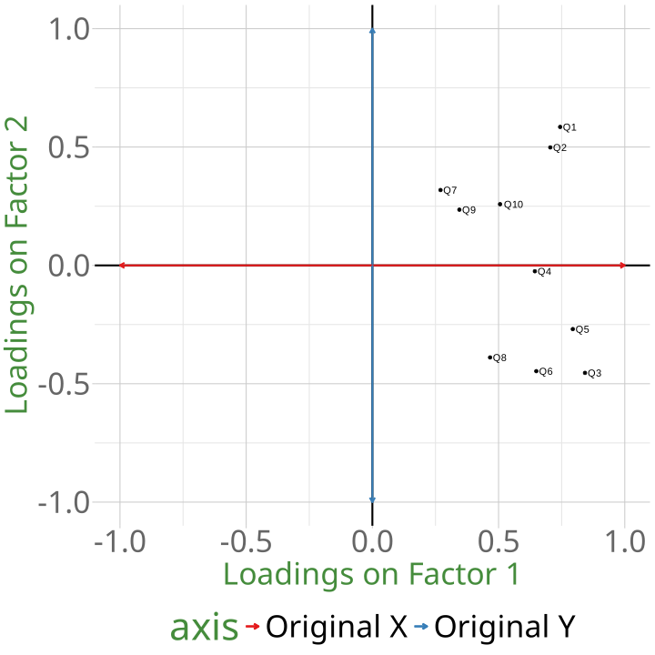
no rotation
Loadings:
MR1 MR2
Q1 0.744 0.585
Q2 0.705 0.498
Q3 0.842 -0.454
Q4 0.644
Q5 0.794
Q6 0.649 -0.447
Q7 0.318
Q8 0.466 -0.389
Q9 0.345
Q10 0.506
MR1 MR2
SS loadings 3.892 1.444
Proportion Var 0.389 0.144
Cumulative Var 0.389 0.534rotate = "varimax" and rotate = "quartimax"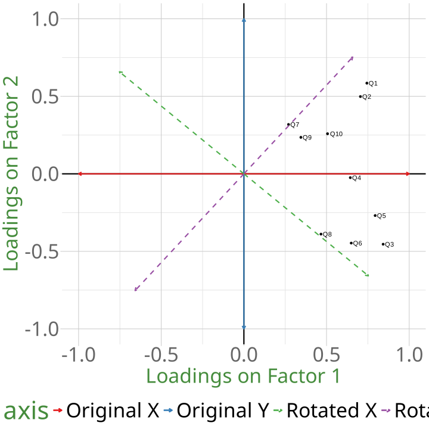
orthogonal
Loadings:
MR1 MR2
Q1 0.930
Q2 0.839
Q3 0.933
Q4 0.501 0.405
Q5 0.775 0.320
Q6 0.783
Q7 0.417
Q8 0.607
Q9 0.404
Q10 0.528
MR1 MR2
SS loadings 2.832 2.504
Proportion Var 0.283 0.250
Cumulative Var 0.283 0.534rotate = "oblimin" and rotate = "promax"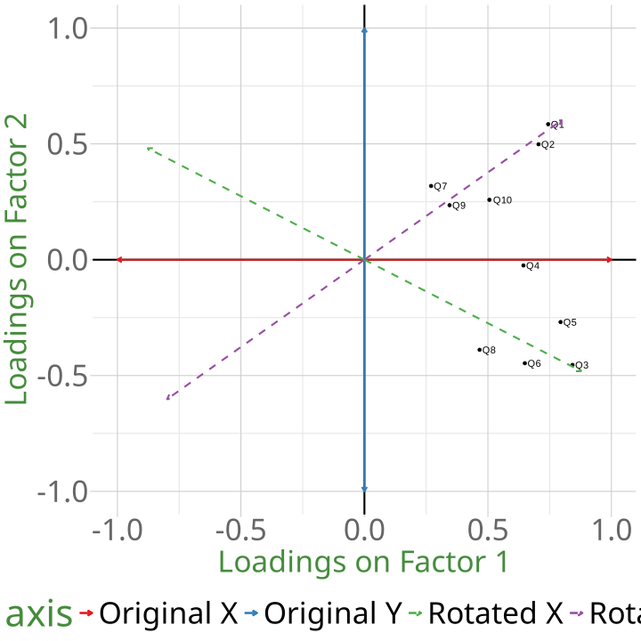
oblique
Loadings:
MR2 MR1
Q1 0.955
Q2 0.851
Q3 0.954
Q4 0.447 0.316
Q5 0.760
Q6 0.820
Q7 0.448
Q8 0.649
Q9 0.408
Q10 0.515
MR2 MR1
SS loadings 2.80 2.418
Proportion Var 0.28 0.242
Cumulative Var 0.28 0.522 With factor correlations of
MR1 MR2
MR1 1.00 0.41
MR2 0.41 1.00We want a range, to consider different possible models.
Take MAP as a minimum
Take Parallel analysis as a maximum
if all methods suggest the same number, take 1 either side.
We will explore all solutions in this range and select the one that yields the best numerically and theoretically.
Factor Analysis using method = minres
Call: fa(r = lsat10[, 2:11], nfactors = 1, fm = "minres", cor = "cor")
Standardized loadings (pattern matrix) based upon correlation matrix
MR1 h2 u2 com
Q1 0.67 0.46 0.54 1
Q2 0.66 0.44 0.56 1
Q3 0.81 0.66 0.34 1
Q4 0.67 0.44 0.56 1
Q5 0.80 0.65 0.35 1
Q6 0.63 0.40 0.60 1
Q7 0.27 0.07 0.93 1
Q8 0.46 0.22 0.78 1
Q9 0.35 0.12 0.88 1
Q10 0.50 0.25 0.75 1
MR1
SS loadings 3.70
Proportion Var 0.37
Mean item complexity = 1
Test of the hypothesis that 1 factor is sufficient.
df null model = 45 with the objective function = 5.22 with Chi Square = 495
df of the model are 35 and the objective function was 2.2
The root mean square of the residuals (RMSR) is 0.14
The df corrected root mean square of the residuals is 0.16
The harmonic n.obs is 100 with the empirical chi square 94.4 with prob < 0.00000023
The total n.obs was 100 with Likelihood Chi Square = 208 with prob < 2.2e-26
Tucker Lewis Index of factoring reliability = 0.503
RMSEA index = 0.222 and the 90 % confidence intervals are 0.194 0.253
BIC = 46.3
Fit based upon off diagonal values = 0.86
Measures of factor score adequacy
MR1
Correlation of (regression) scores with factors 0.94
Multiple R square of scores with factors 0.88
Minimum correlation of possible factor scores 0.77Factor Analysis using method = minres
Call: fa(r = lsat10[, 2:11], nfactors = 2, rotate = "oblimin", fm = "minres",
cor = "cor")
Standardized loadings (pattern matrix) based upon correlation matrix
MR1 MR2 h2 u2 com
Q1 -0.02 0.95 0.90 0.105 1.0
Q2 0.03 0.85 0.75 0.255 1.0
Q3 0.95 0.01 0.92 0.084 1.0
Q4 0.45 0.32 0.42 0.585 1.8
Q5 0.76 0.16 0.70 0.297 1.1
Q6 0.82 -0.09 0.62 0.378 1.0
Q7 -0.10 0.45 0.17 0.826 1.1
Q8 0.65 -0.13 0.37 0.631 1.1
Q9 0.02 0.41 0.17 0.826 1.0
Q10 0.11 0.52 0.32 0.677 1.1
MR1 MR2
SS loadings 2.86 2.48
Proportion Var 0.29 0.25
Cumulative Var 0.29 0.53
Proportion Explained 0.54 0.46
Cumulative Proportion 0.54 1.00
With factor correlations of
MR1 MR2
MR1 1.00 0.41
MR2 0.41 1.00
Mean item complexity = 1.1
Test of the hypothesis that 2 factors are sufficient.
df null model = 45 with the objective function = 5.22 with Chi Square = 495
df of the model are 26 and the objective function was 0.4
The root mean square of the residuals (RMSR) is 0.04
The df corrected root mean square of the residuals is 0.06
The harmonic n.obs is 100 with the empirical chi square 8.68 with prob < 1
The total n.obs was 100 with Likelihood Chi Square = 37.8 with prob < 0.063
Tucker Lewis Index of factoring reliability = 0.954
RMSEA index = 0.067 and the 90 % confidence intervals are 0 0.112
BIC = -81.9
Fit based upon off diagonal values = 0.99
Measures of factor score adequacy
MR1 MR2
Correlation of (regression) scores with factors 0.95 0.95
Multiple R square of scores with factors 0.90 0.90
Minimum correlation of possible factor scores 0.80 0.80Factor Analysis using method = minres
Call: fa(r = lsat10[, 2:11], nfactors = 3, rotate = "oblimin", fm = "minres",
cor = "cor")
Standardized loadings (pattern matrix) based upon correlation matrix
MR2 MR1 MR3 h2 u2 com
Q1 -0.02 0.95 0.02 0.90 0.104 1.0
Q2 0.05 0.82 0.07 0.73 0.270 1.0
Q3 0.98 -0.03 0.09 0.94 0.065 1.0
Q4 0.49 0.26 0.17 0.44 0.560 1.8
Q5 0.77 0.14 0.06 0.70 0.299 1.1
Q6 0.78 0.00 -0.29 0.72 0.280 1.3
Q7 -0.03 0.35 0.32 0.25 0.746 2.0
Q8 0.63 -0.11 -0.03 0.36 0.639 1.1
Q9 0.09 0.32 0.26 0.22 0.776 2.1
Q10 0.02 0.65 -0.28 0.46 0.536 1.4
MR2 MR1 MR3
SS loadings 2.90 2.43 0.40
Proportion Var 0.29 0.24 0.04
Cumulative Var 0.29 0.53 0.57
Proportion Explained 0.51 0.42 0.07
Cumulative Proportion 0.51 0.93 1.00
With factor correlations of
MR2 MR1 MR3
MR2 1.00 0.41 -0.07
MR1 0.41 1.00 0.15
MR3 -0.07 0.15 1.00
Mean item complexity = 1.4
Test of the hypothesis that 3 factors are sufficient.
df null model = 45 with the objective function = 5.22 with Chi Square = 495
df of the model are 18 and the objective function was 0.26
The root mean square of the residuals (RMSR) is 0.03
The df corrected root mean square of the residuals is 0.05
The harmonic n.obs is 100 with the empirical chi square 4.59 with prob < 1
The total n.obs was 100 with Likelihood Chi Square = 24.3 with prob < 0.15
Tucker Lewis Index of factoring reliability = 0.964
RMSEA index = 0.058 and the 90 % confidence intervals are 0 0.114
BIC = -58.6
Fit based upon off diagonal values = 0.99
Measures of factor score adequacy
MR2 MR1 MR3
Correlation of (regression) scores with factors 0.97 0.94 0.67
Multiple R square of scores with factors 0.95 0.88 0.45
Minimum correlation of possible factor scores 0.89 0.75 -0.11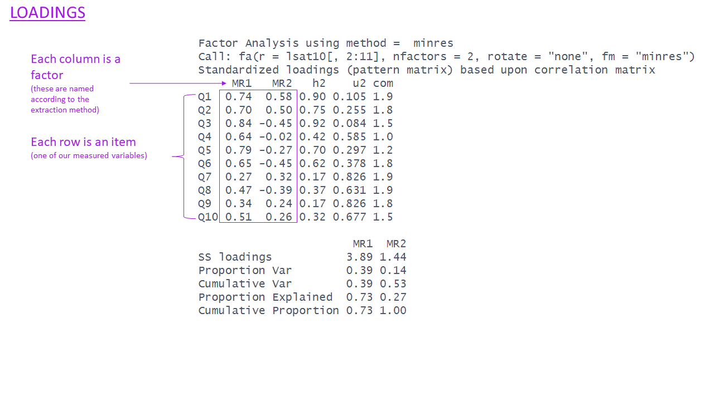
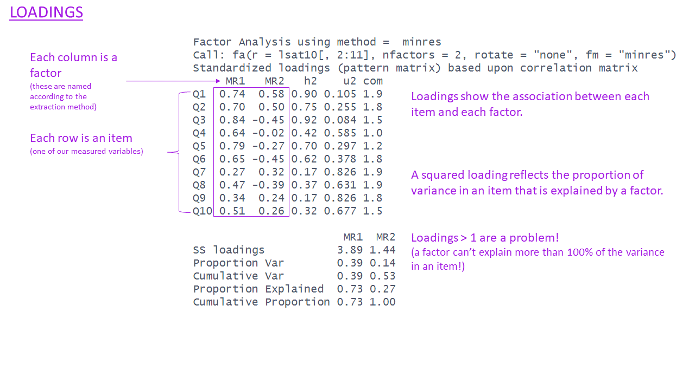
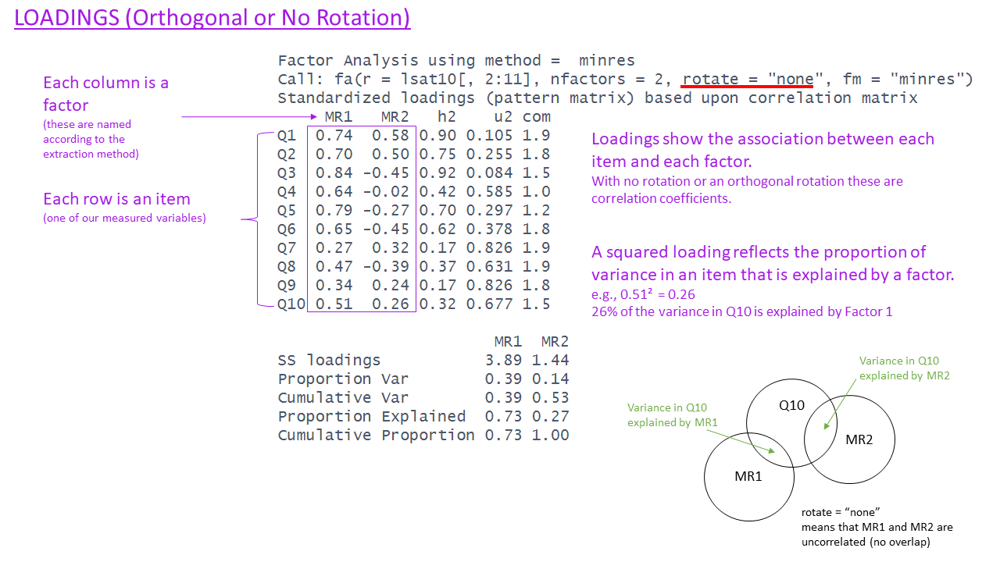
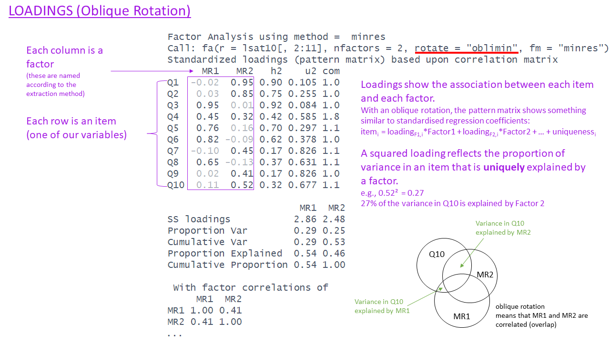
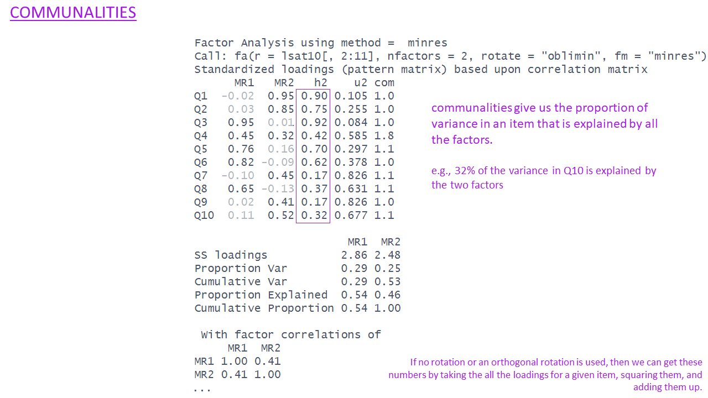
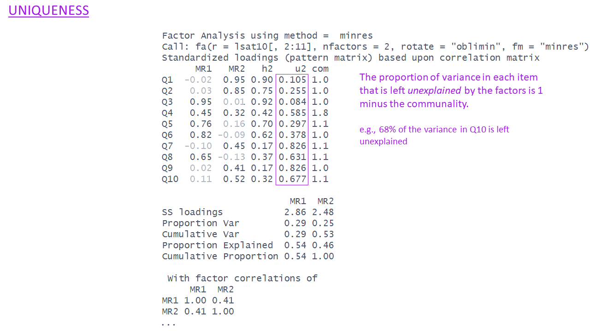
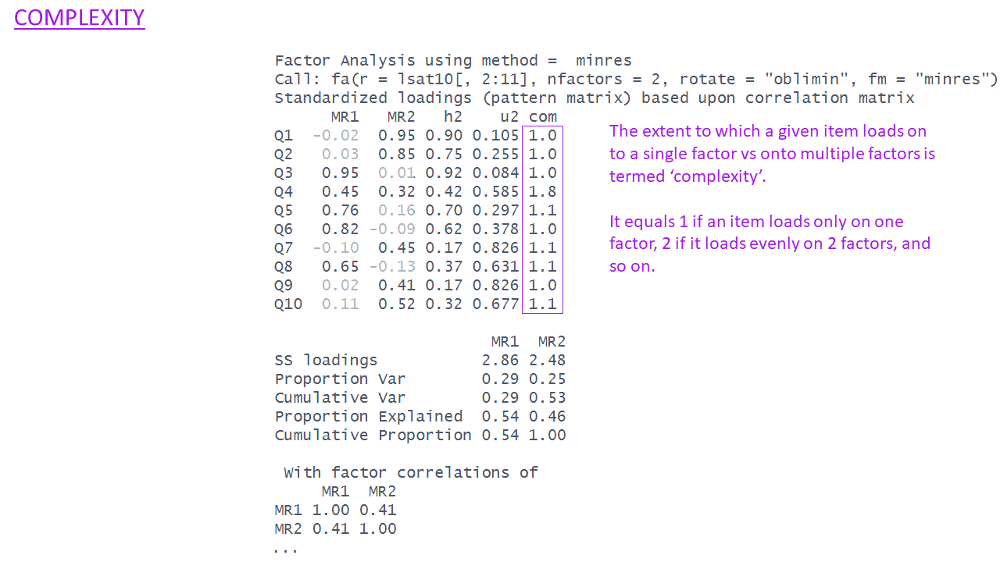
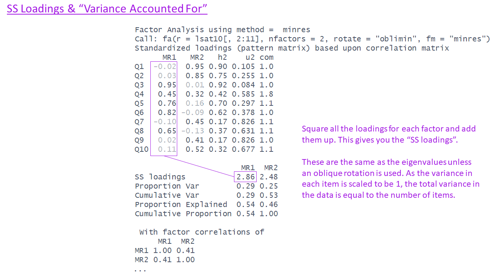
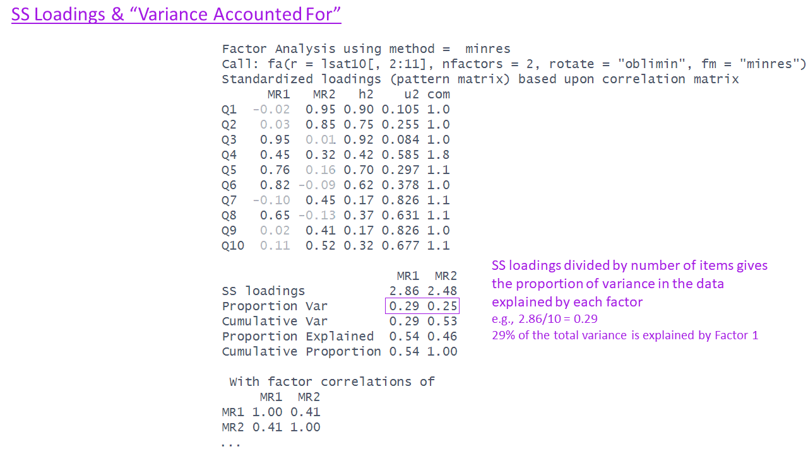
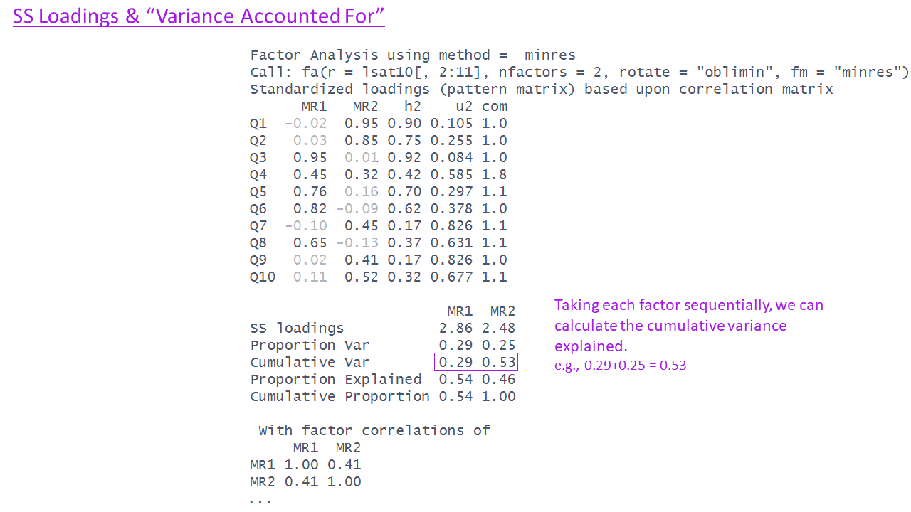
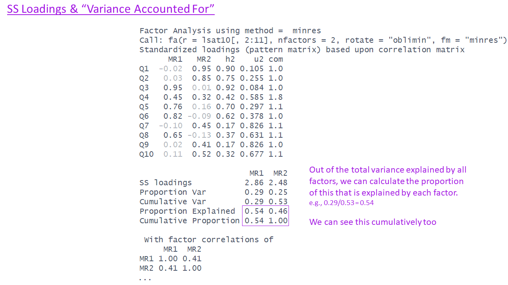
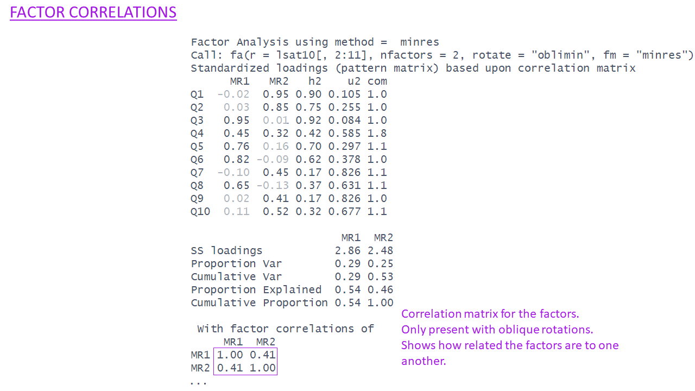
Variance explained
Identification of factors
Salience of items
Cross-loadings
Heywood cases
Theoretical coherence
… and when in doubt, parsimony
>> Variance explained
Identification of factors
Salience of items
Cross-loadings
Heywood cases
Theoretical coherence
… and when in doubt, parsimony
Variance explained
>> Identification of factors
Salience of items
Cross-loadings
Heywood cases
Theoretical coherence
… and when in doubt, parsimony
V
Variance explained
Identification of factors
>> Salience of items
Cross-loadings
Heywood cases
Theoretical coherence
… and when in doubt, parsimony
V
I
Variance explained
Identification of factors
Salience of items
>> Cross-loadings
Heywood cases
Theoretical coherence
… and when in doubt, parsimony
V
I
S
Variance explained
Identification of factors
Salience of items
Cross-loadings
>> Heywood cases
Theoretical coherence
… and when in doubt, parsimony
V
I
S
C
Variance explained
Identification of factors
Salience of items
Cross-loadings
Heywood cases
>> Theoretical coherence
… and when in doubt, parsimony
V
I
S
C
H
1 factor model TEST
Loadings:
MR1
Q1 0.675
Q2 0.661
Q3 0.812
Q4 0.666
Q5 0.804
Q6 0.632
Q10 0.505
Q7
Q8 0.464
Q9 0.347
MR1
SS loadings 3.70
Proportion Var 0.372 factor model
Loadings:
MR2 MR1
Q3 0.954
Q5 0.760
Q6 0.820
Q8 0.649
Q1 0.955
Q2 0.851
Q10 0.515
Q4 0.447 0.316
Q7 0.448
Q9 0.408
MR2 MR1
SS loadings 2.80 2.418
Proportion Var 0.28 0.242
Cumulative Var 0.28 0.5223 factor model
Loadings:
MR1 MR2 MR3
Q3 0.982
Q5 0.772
Q6 0.777
Q8 0.634
Q1 0.950
Q2 0.820
Q10 0.655
Q4 0.492
Q7 0.349 0.322
Q9 0.320
MR1 MR2 MR3
SS loadings 2.818 2.326 0.380
Proportion Var 0.282 0.233 0.038
Cumulative Var 0.282 0.514 0.5521 factor model
Loadings:
MR1
Q1 0.675
Q2 0.661
Q3 0.812
Q4 0.666
Q5 0.804
Q6 0.632
Q10 0.505
Q7
Q8 0.464
Q9 0.347
MR1
SS loadings 3.70
Proportion Var 0.372 factor model
Loadings:
MR1 MR2
Q3 0.954
Q5 0.760
Q6 0.820
Q8 0.649
Q1 0.955
Q2 0.851
Q10 0.515
Q4 0.447 0.316
Q7 0.448
Q9 0.408
MR1 MR2
SS loadings 2.80 2.418
Proportion Var 0.28 0.242
Cumulative Var 0.28 0.522| variable | description |
|---|---|
| id | Participant ID |
| Q1 | Overall, I am satisfied with my life. |
| Q2 | The conditions of my life are excellent. |
| Q3 | I feel content with how things have gone today. |
| Q4 | I am deeply happy with the way my life has turned out. |
| Q5 | I feel a sense of inner peace and satisfaction. |
| Q6 | I wake up most mornings feeling positive about the day ahead. |
| Q7 | I have gotten the important things I want in life. |
| Q8 | I experience joy and pleasure regularly in my daily life. |
| Q9 | My life has turned out better than I expected it would. |
| Q10 | If I could live my life over, I would change almost nothing. |
identification
some items could turn out to be:
watch out - both of these could also mean we don’t have enough factors!
what to do
💩 The “garbage in garbage out” principle always applies
PCA and factor analysis cannot turn bad data into good data
If one or more factors don’t make sense, then either the items are bad, the theory is bad, the analysis is bad, or all three are bad!
I went through the responses from last week, and pulled out these recurring themes: